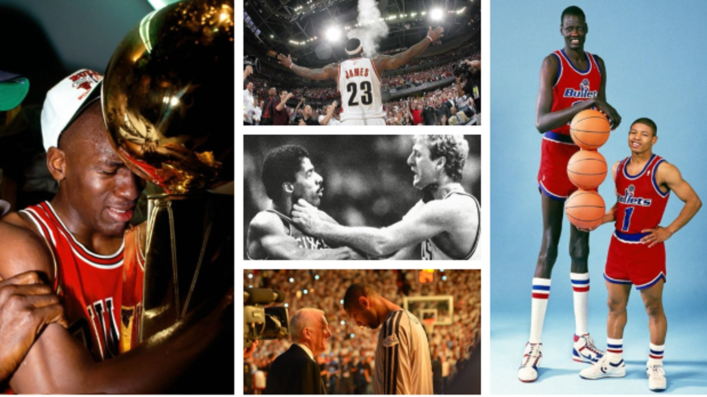
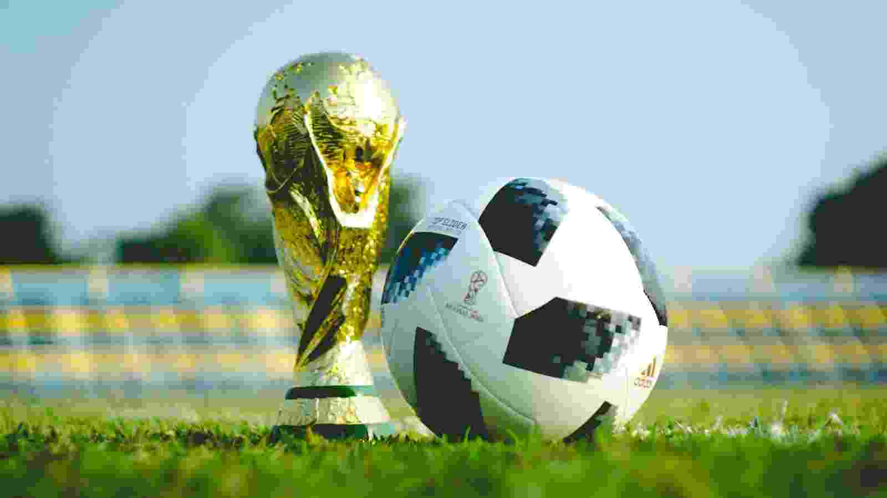
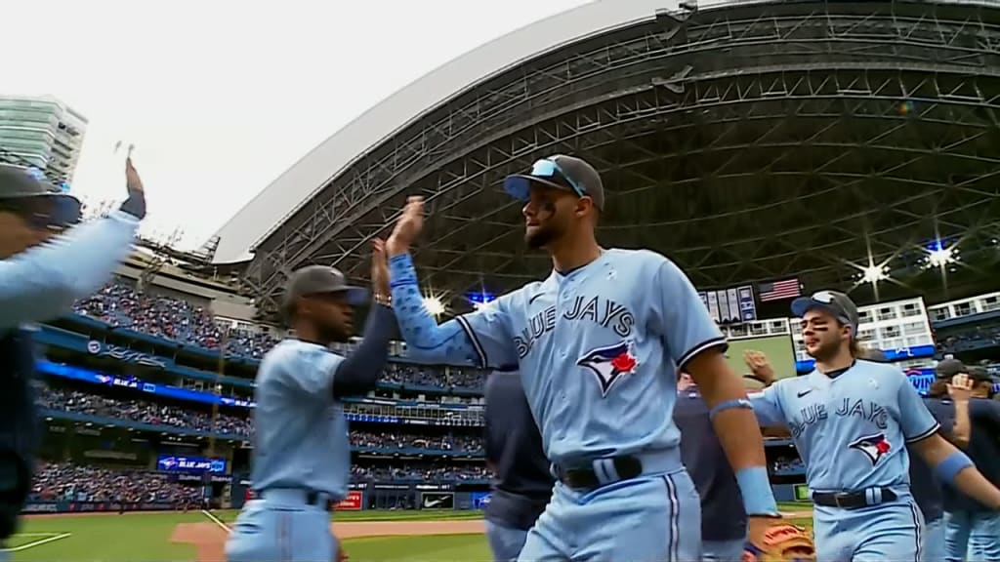

Basketball began with its invention in 1891 in Springfield, Massachusetts, by Canadian physical education instructor James Naismith as a less
injury-prone sport than football. Naismith was a 31-year old graduate student when he created the indoor sport to keep athletes
indoors during the winters. The game became established fairly quickly and grew very popular as the 20th century progressed,
first in America and then in other parts of the world. After basketball became established in American colleges, the professional
game followed. The American National Basketball Association (NBA), established in 1946, grew to a multibillion-dollar enterprise by
the end of the century, and basketball became an integral part of American culture.

Memories from history of basketball
Soccer
The History Of Soccer
More than 240 million people around the world play soccer regularly according to the Federation Internationale de Football
Association (FIFA). The game has evolved from the sport of kicking a rudimentary animal-hide ball around into the World Cup
sport it is today.
Records trace the history of soccer back more than 2,000 years ago to ancient China. Greece, Rome, and parts of Central America
also claim to have started the sport; but it was England that transitioned soccer, or what the British and many other people around
the world call “football,” into the game we know today. The English are credited with recording the first uniform rules for the
sport, including forbidding tripping opponents and touching the ball with hands.

The World Cup is a gold trophy that is awarded to the winners of the FIFA World Cup association football tournament.
Baseball
A brif history of baseball
Baseball is a bat-and-ball sport played between two teams of nine players each, taking turns batting and fielding.
The game is live when the umpire signals to the pitcher either verbally or by pointing, indicating that the ball is
now in play. A player on the fielding team, called the pitcher, throws a ball that a player on the batting team tries
to hit with a bat. The objective of the offensive team (batting team) is to hit the ball into the field of play, away
from the other team's players, allowing its players to run the bases, having them advance counter-clockwise around
four bases to score what are called "runs". The objective of the defensive team (referred to as the fielding team)
is to prevent batters from becoming runners, and to prevent runners' advance around the bases.[2] A run is scored
when a runner legally advances around the bases in order and touches home plate (the place where the player started
as a batter).

A professional baseball team celebrating.
Abel Assefa Avatar
Title: Programming student
Website theme sports
Email: Abel788yayu@gmail.com
Abel Assefa Favorit Sport
The values of sports
Currently, my favorite sports are basketball and boxing. I grew up playing basketball and boxing is great for cardio.
I played organized basketball growing up. Sports teach you integrity, respect, responsibility, sportsmanship, and
servant leadership. Physical activity has been shown to stimulate chemicals in the brain that make you feel better.
So playing sport regularly improves children's overall emotional well-being. Research shows there's a link between playing
sport and self-esteem